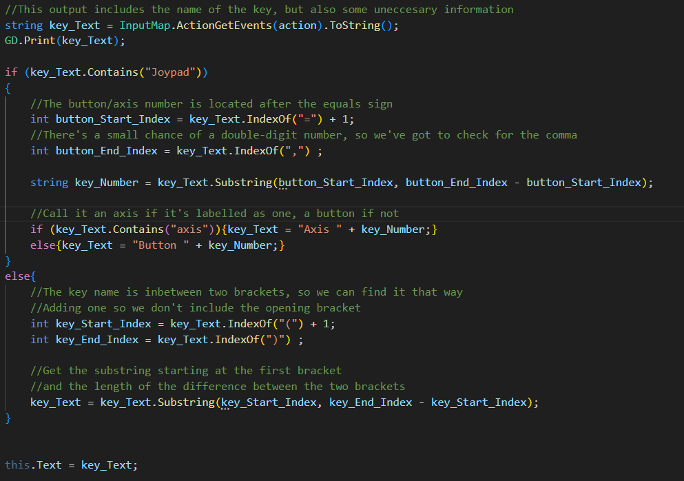
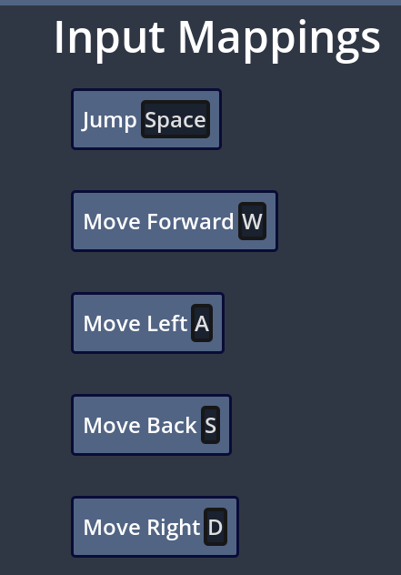

Game Jams are a game making challenge where people are tasked to create a game, usually following a theme or restriction, in a limited time. Most allow some degree of default code or templates, which make experienced developers stand out in the judging. I want to practice my Godot skills by making a few tools and templates, for use in future game jams.
26/07/24
Acessibility is an important part of game creation, but it often gets put aside in the limited context of a game jam, so a settings menu with control remapping and space for more specific options will make that easier.
I’m very proud of this little bit of utility work I did on this control remapping code. Given the short timeframes in a game jam, I thought I’d save myself a bit of time by programmatically populating the controls menu with all the controls defined in the input map.
The instantiating is pretty simple, although I do have to skip over the 76 Ui controls. The really tricky bit is locating the button’s name from the event object.
[InputEventKey: keycode=32 (Space), mods=none, physical=true, pressed=false, echo=false]
Keyboard buttons look like this as strings, and they have their names between two brackets, so we can locate them that way. But what about controllers?
[InputEventJoypadButton: button_index=9, pressed=true, pressure=0.00]
No brackets here, so the keyboard code throws an error. I can check for the string ‘Joypad’, which I think is generic across controllers? I’d love to just check the number after it, but there’s a chance of a double-digit number here, so I’ll have to do it the long way.
Now, this is looking great, but it seems to think all the buttons are called 'space' right now. I think this is because the instantiate button and update label code are both in _ready, which causes them to run in the wrong order. A constructor wouldn’t work, because it would run when the scene is created, and there’s some steps between that and getting the button itself. Godot does provide an early initialisation called _Init, but I don’t know if that applies to UI elements.
Instead, I’ll replace _ready with my own constructor and call in manually from the control list.
And there we go! Of course, reading directly from the editor like this means I'll have to be careful and not confuse players by leaving redundant controls in the settings, but hopefully it'll be useful.
